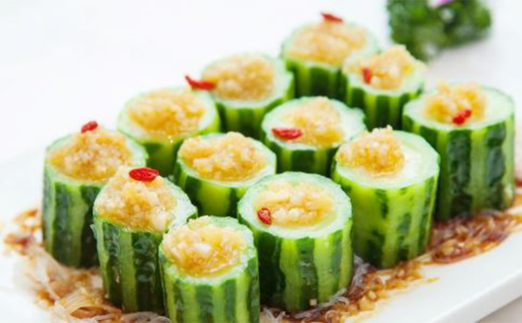

夏季如何排毒 推荐几款食物

黄瓜
《本草纲目》中记载，黄瓜有清热、解渴、利 水、消肿之功效。黄瓜肉质脆嫩，汁多味甘， 生食生津解渴，且有特殊芳香。据分析，黄瓜含水分为98%，富含蛋白质、糖类、维生素B2、维生素C、维生素E、胡萝卜素、尼克酸、钙、磷、铁等营养成分。
绿豆
绿豆具清热解毒、除湿利尿、消暑解渴的功效。是由于绿豆富含维生素B、葡萄糖、蛋白质、淀粉酶、氧化酶、铁、钙、磷等多种成分，常食能帮助排泄体内毒素，促进机体的正常代谢。是清热解毒的佳品，味道清香，老少咸宜。
红豆
红豆可增加肠胃蠕动，减少便秘，促进排尿。红豆有清心养神、健脾益肾功效，加入莲子、百合更有固精益气、止血、强健筋骨等作用，能治肺燥、干咳，提升内脏活力，增强体力。
酸奶
酸奶中含多种维生素，其中的维生素C能减少黑 色素形成，令肌肤保持白皙。